Исследуйте Меджуреч
 3+
4h
 1.5km
100€
3+
4h
 1.5km
100€
Всего в получасе езды от центра Бара находится один из самых привлекательных каньонов Черногории, рай для искателей приключений - каньон Меджуреч. Он расположен на склонах горы Румия, всего в нескольких километрах от побережья Адриатического моря и примерно в 15 км от порта Бар. Хотя он относительно короткий (менее 2 км), из-за большого количества воды (даже в летние месяцы) красивые вертикали и бассейны, этот каньон является одним из лучших мест для каньонинга в Черногории.
Программа
• Сбор в Баре на стоянке гипермаркета Лакович утром
• 20 минут езды до подножия каньона
• Знакомство с оборудованием и видом планируемых работ.
• Транспортировка на вездеходе до исходной позиции
• 10-минутная прогулка по горной тропе до входа в каньон
• Каньонинг - спуск по каньону и водопадам продолжительностью около 4 часов
• 10 минут ходьбы до машины, где заканчивается занятие
Примечания: В связи с погодными условиями в программе возможны незначительные изменения.
Подробности
Цена 100 евро на человека
Для групп 8+ человек мы предоставляем дополнительные скидки
В стоимость входит:
• гидрокостюм и носки для дайвинга
• шлем
• пояс для каньонинга
• канат и другие сопутствующие технические средства
• гиды по каньонингу
• налоги
• фотографии
В стоимость не входит:
• транспорт
• обед
Возраст участников команды должен быть не менее 12 лет и не более 60.
Несовершеннолетние участники должны быть в сопровождении родителя
Студенты должны уметь плавать
Участник должен быть здоровым человеком
Употребление алкоголя перед прохождением каньона запрещено
С собой необходимо взять купальник, шорты и сухую одежду.
WhatsApp: +382 68 139 196
Viber +382 68 139 196